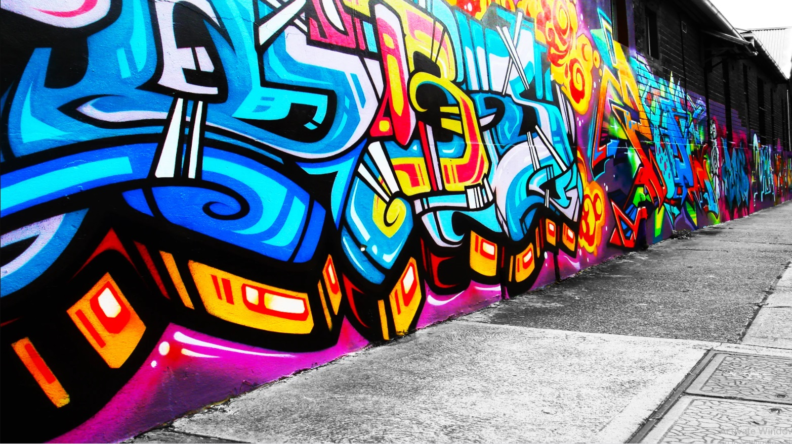
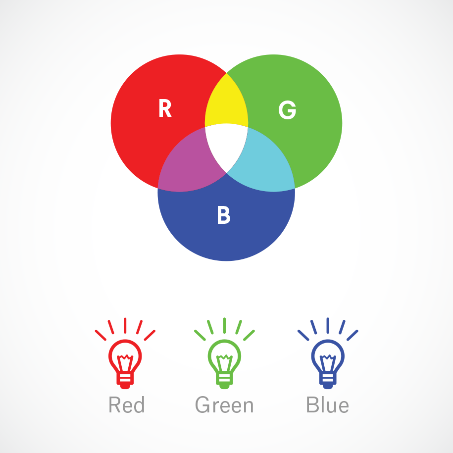
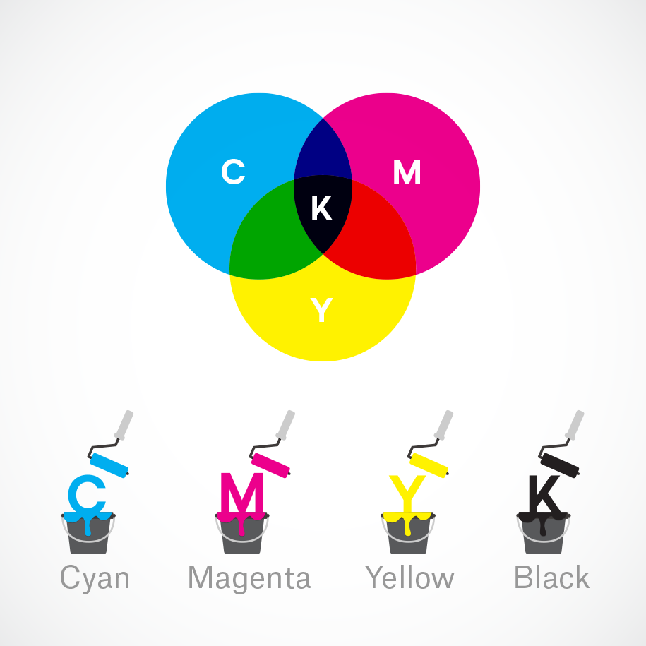
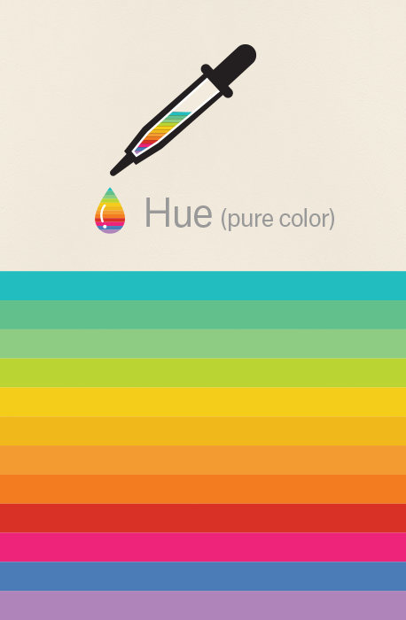
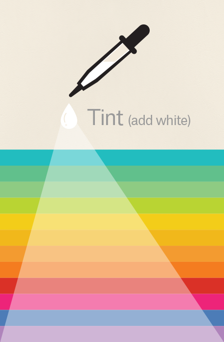
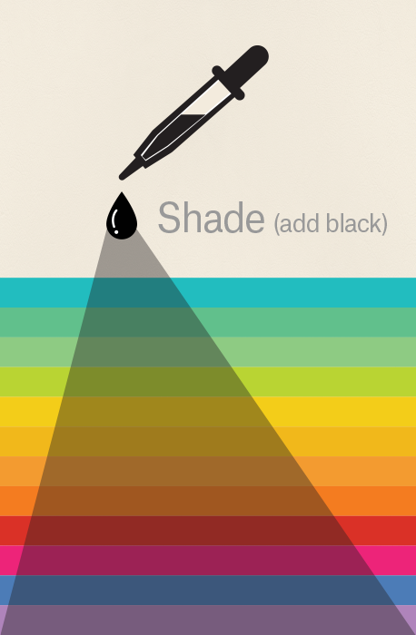
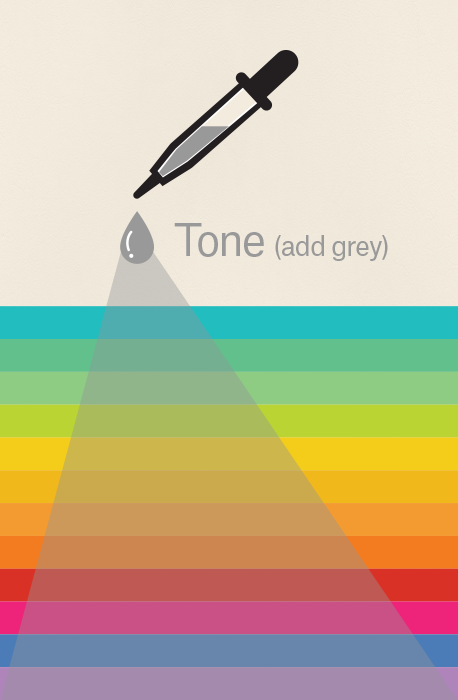
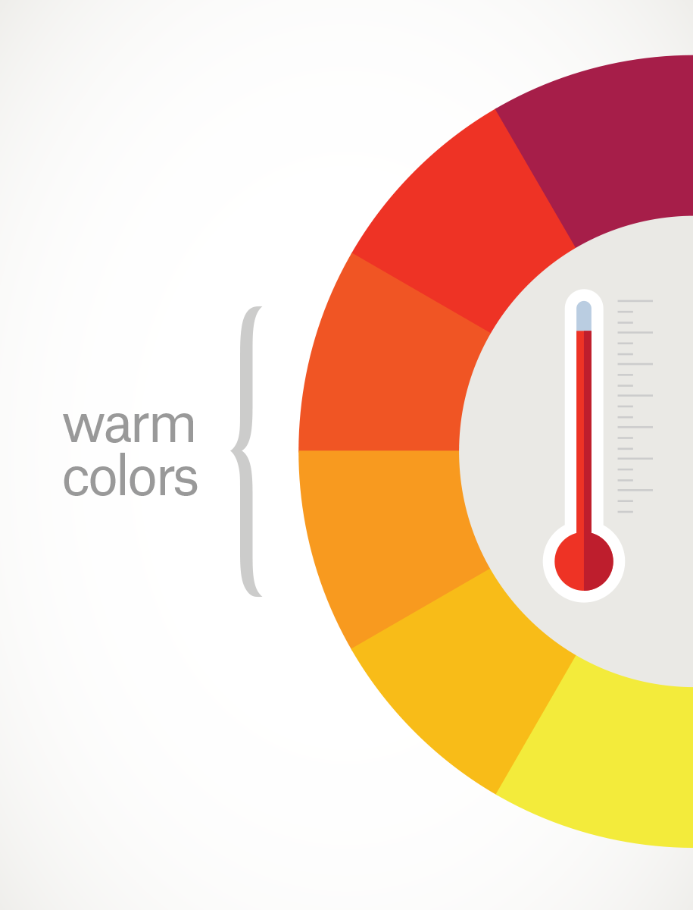
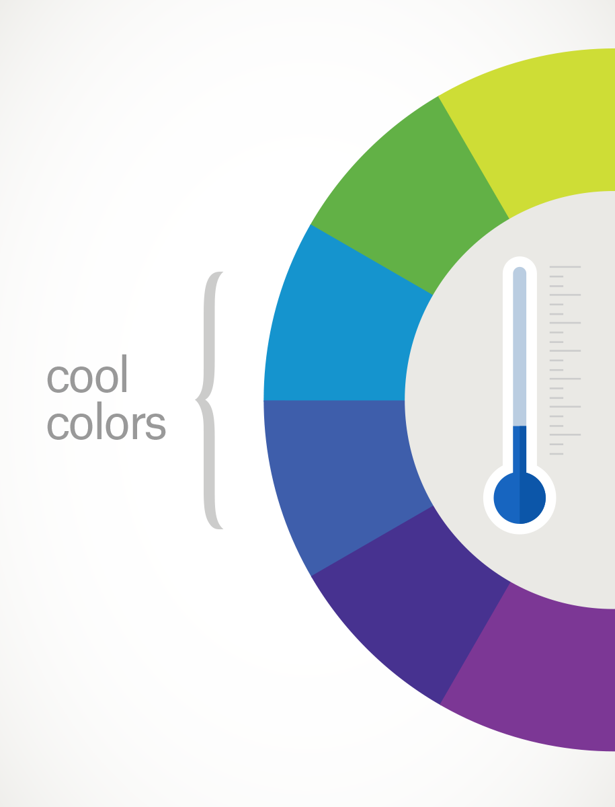

Tema 8: La aplicación del color

Para el arte urbano, la aplicación de colores se vuelve un elemento importante, ya sea porque puede afectar el resultado visualmente, o puede volverse un elemento central en la obra. Es importante entonces entender cuál es el papel del color en las obras de arte y cuáles pueden ser sus efectos o significados, para ello, hay dos temáticas que son importantes de estudiar:.
Teoría del color
En el arte de la pintura, el diseño gráfico, el diseño visual, la fotografía, la imprenta y en la televisión, la teoría del color es un grupo de reglas básicas que configuran la mezcla de colores con el objetivo de obtener un resultado específico, el cual puede variar dependiendo del formato:
• Colores por medio de métodos digitales, conocido como RGB: Nuestros ojos están diseñados para observar las frecuencias de luz y la mezcla de esas frecuencias generan lo que llamamos el modelo de los colores aditivos por medio de la mezcla del color rojo, el verde y el azul para generar distintas mezclas hasta llegar a lo que sería el blanco.

• Colores por medios físicos: Conocido como CMYK: Usado generalmente en medios impresos y técnicas tradicionales (como el Graffiti) usa lo que se conoce como la mezcla de colores substractiva en donde usamos la mezcla de los colores Cyan, Magenta y amarillo para generar negro, donde el color negro pasa a ser la K (conocido como “Key”) y se considera también como un color aparte debido a que la mezcla de colores siempre genera un negro imperfecto. Se utilizan generalmente esos 3 colores debido al tipo de tinta y pigmentos usados generalmente en impresores y pinturas.

Aunque en términos generales para crear piezas de arte no es necesario saber a fondo la teoría del color, para el uso del Graffiti y Arte Urbano, donde el mensaje de la pieza es lo fundamental, tener conocimientos básicos de la teoría son necesarios, y una de las herramientas principales es la rueda del color:
• La primera rueda del color fue diseñada por Sir Isaac Newton en 1666, y es utilizado para desarrollar armonía del color, mezcla y generación de paletas de color para todo tipo de proyectos. La rueda consiste de 3 colores primarios (amarillo azul y rojo), 3 colores secundarios (generados por la mezcla de colores primarios), acompañados de 6 colores terciarios (generados por la mezcla de colores primarios y secundarios)
Para finalizar, es también importante entender que en el tema de colores hay 4 elementos básicos a tener en cuenta:
• Matiz (conocido como hue en inglés): es esencialmente el “color” base o el pigmento.

• Tinte (conocido como Tint): que es la mezcla del blanco con el matiz

• Sombra (shade): que es la mezcla del negro con el matiz

• Tono (tone): que es la mezcla del gris con el matiz.

La psicología del color
Siguiendo el tema de los colores, es importante tener en cuenta que para las piezas de arte, incluido el arte urbano y el grafiti, el mensaje de la obra es en términos simples el punto más importante, por lo cual, un buen manejo de la psicología del color es necesaria para hacer que el mensaje pueda llegar a ser más impactante y fácil de entender por la mayor cantidad de personas.
Para la psicología del color usualmente hay 2 elementos claves:
• Colores cálidos, como el rojo, amarillo o naranja que pueden generar emociones fuertes y negativas como la ira, hostilidad, o enfado; incluyendo emociones positivas como el amor, la calidez o la pasión.

• Colores fríos, como el verde o el azul, que generan sensaciones más sutiles como la calma, la melancolía.

La psicología del color se usa en todo tipo de ejemplos en la vida cotidiana:
• Desde pintar tu casa de un color que te hace sentir relajado y en calma
• O usarlos en comerciales o publicidad que intentan incitarte al deseo de tener un producto.
Adicionalmente la psicología del color tiene su uso en elementos como el branding y el marketing, como artista de arte urbano uno de los elementos que más ha de usar es una firma o marca que te identifica como artista:
• El tipo de tipografía a usar
• El tipo de elementos a usar
• El tipo de colores a usar
Todo ello hace parte de una “identidad de marca” que eventualmente un artista empieza a generar y con el cual es identificado por los consumidores de su arte.
Videos de apoyo
Te invitamos a ver los siguientes videos con los cuales puedes aprender un poco màs del tema.